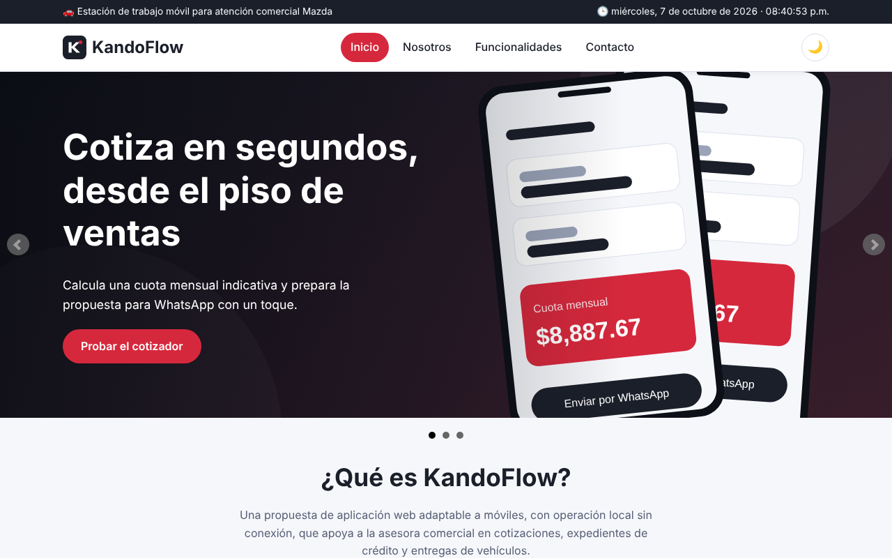
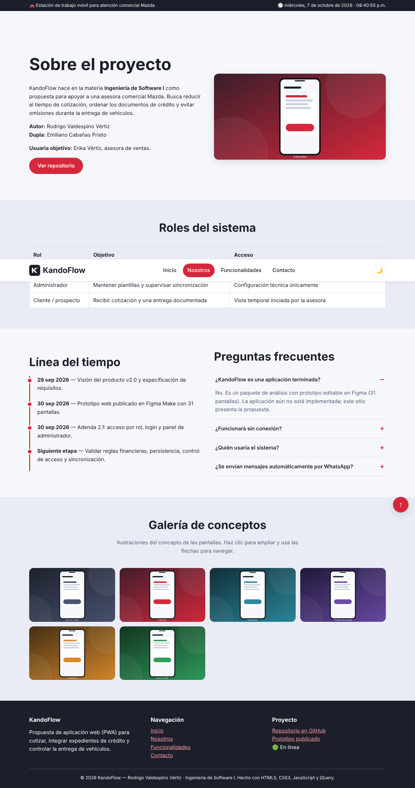
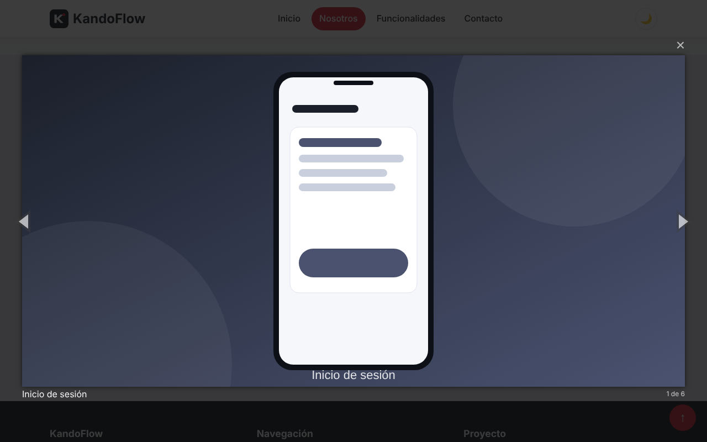
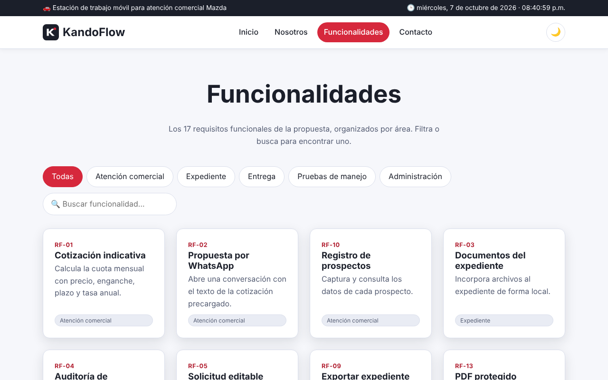
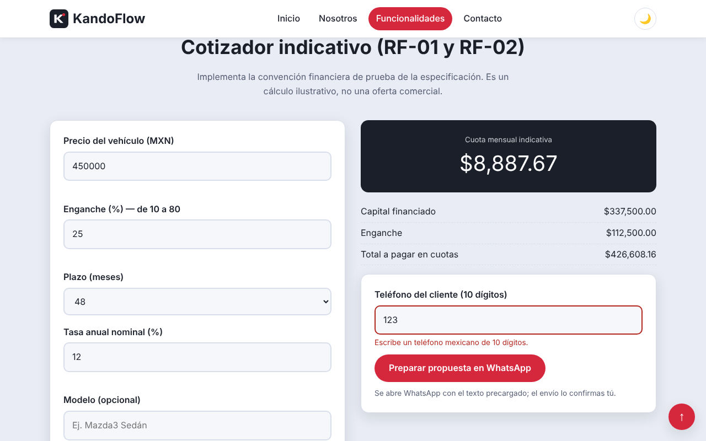
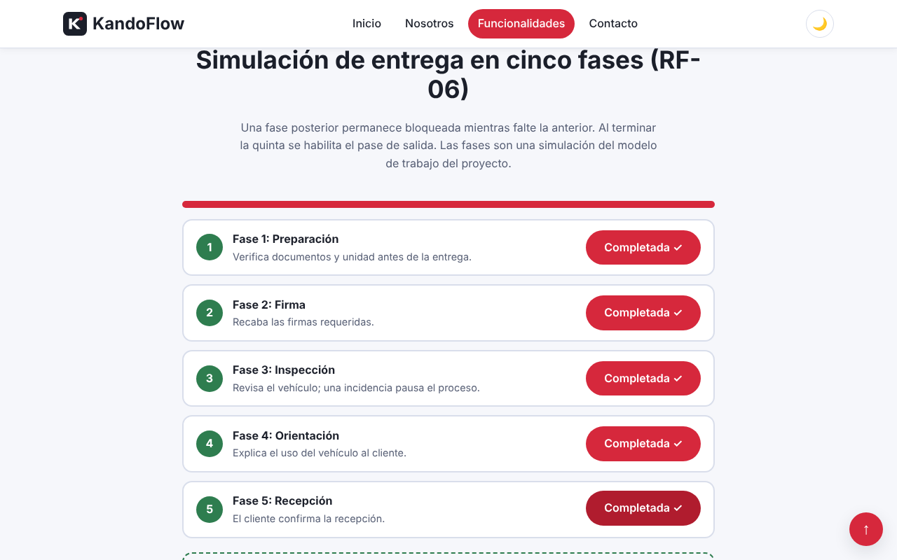
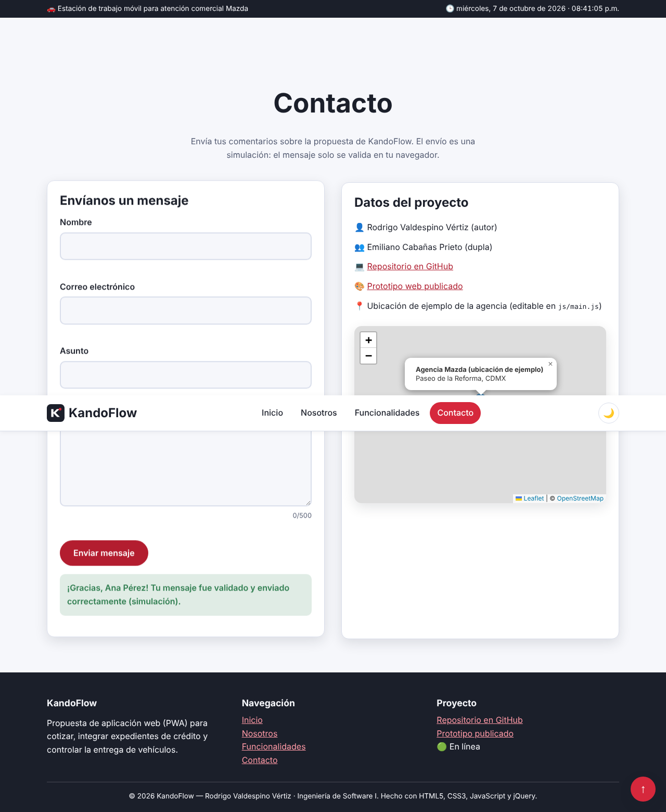
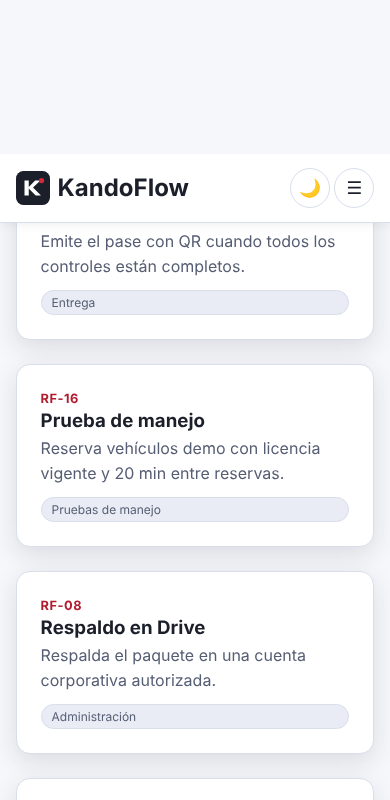

Sitio web de presentación del proyecto
Proyecto final — HTML5, CSS3, JavaScript, jQuery y plugins
Autor: Rodrigo Valdespino Vértiz
Octubre de 2026
KandoFlow — Sitio web. Sitio responsivo de cuatro páginas (Inicio, Nosotros, Funcionalidades y Contacto) que presenta la propuesta KandoFlow: estación de trabajo móvil para cotizaciones, expedientes de crédito y entrega de vehículos Mazda. Incluye cotizador indicativo, simulación de entrega en cinco fases, formulario validado, mapa interactivo y tema claro/oscuro.
Repositorio: github.com/james-gosling/kando-flow (carpeta sitio-web).








| Tecnología | Uso |
|---|---|
| HTML5 | Estructura semántica, formularios y accesibilidad (aria, enlace de salto). |
| CSS3 | Variables, Grid, Flexbox, media queries, transiciones y tema oscuro. |
| JavaScript | Fecha y hora, estado de conexión, validación, «Ir arriba», tema oscuro (localStorage), mapa. |
| jQuery 3.7.1 | Eventos, efectos, manipulación del DOM, cotizador, simulación de entrega. |
| bxSlider 4.2.17 | Plugin: carruseles. |
| Magnific Popup 1.1.0 | Plugin: lightbox de la galería. |
| Leaflet 1.9.4 + OpenStreetMap | Mapa interactivo. |
| Git y GitHub | Control de versiones. |
docs del repositorio.